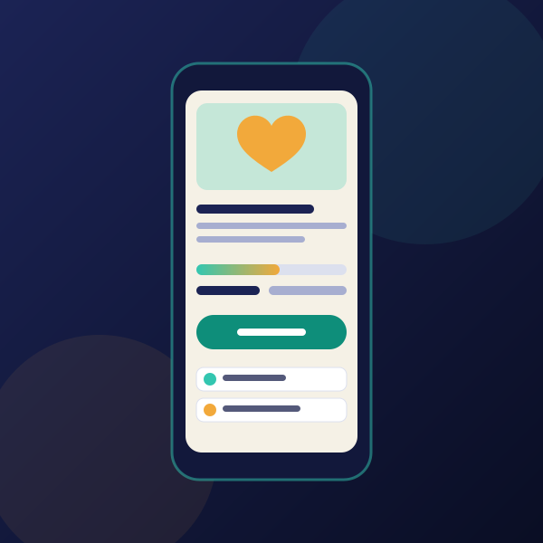

Galang Donasi Online yang Transparan, Tanpa Rekap Manual
Website donasi siap pakai untuk yayasan, masjid, sekolah, dan komunitas. Kampanye, verifikasi donasi, dan laporan penyaluran terbuka dalam satu tempat.
- Maintenance 1 tahun
- Security audit sebelum serah terima
- Demo bisa dicoba langsung

Masih galang dana lewat chat dan transfer manual?
Awalnya terasa cukup. Lalu penggalangannya membesar.
Donasi tercecer
Bukti transfer menumpuk di chat grup dan sulit dicocokkan satu per satu.
Rekap memakan waktu
Total terkumpul dan daftar donatur dihitung manual, rawan salah angka.
Donatur ragu
Tanpa laporan penyaluran yang jelas, kepercayaan sulit dibangun.
Semakin besar penggalangan, semakin berat mengurusnya. Satu angka yang keliru atau laporan yang terlambat bisa membuat donatur berhenti percaya.
Satu website untuk semua urusan donasi
Dari halaman kampanye sampai laporan penyaluran, semuanya rapi dan bisa dipantau kapan saja.
Halaman kampanye lengkap
Cerita, foto, target, progres dana, dan kabar terbaru. Donatur paham ke mana dananya.
Transfer bank & QRIS
Donatur transfer lalu unggah bukti, tanpa perlu memasang aplikasi tambahan.
Verifikasi & kuitansi
Admin memverifikasi setiap donasi, dan donatur dapat kuitansi sebagai bukti.
Laporan penyaluran terbuka
Pengeluaran dicatat dan ditampilkan, sehingga kepercayaan donatur terjaga.
Dasbor admin
Ringkasan total terkumpul, donasi menunggu verifikasi, dan grafik per kampanye.
Tampilan bisa diubah sendiri
Logo, favicon, warna tema, dan teks beranda diganti lewat panel admin tanpa programmer.
Dukungan donatur
Tombol dukung dan pesan doa dari donatur membuat kampanye terasa hidup.
Nyaman di semua layar
Rapi di HP, tablet, dan desktop, plus mudah dibagikan lewat WhatsApp.
Dari konsultasi sampai siap menerima donasi
Konsultasi gratis
Ceritakan jenis penggalangan dan kebutuhan lembaga Anda lewat WhatsApp.
Setup & penyesuaian
Logo, warna, nama, rekening, dan kampanye pertama disiapkan sesuai identitas Anda.
Serah terima & pendampingan
Sistem diserahkan setelah pengecekan keamanan, dengan maintenance penuh selama 1 tahun.
Lihat demonya sebelum memutuskan
Jelajahi halaman kampanye, alur donasi, dan tampilannya di HP maupun desktop. Data pada demo hanyalah contoh.
Satu harga, tanpa biaya bulanan
Sudah termasuk domain bawaan (vercel.app) dan maintenance 1 tahun.
Pembayaran otomatis lewat Midtrans bersifat opsional, tidak wajib. Perizinan penggalangan dana mengikuti aturan yang berlaku dan menjadi tanggung jawab lembaga penyelenggara.
Pertanyaan yang sering ditanyakan
Siapa yang cocok memakai website donasi ini?
Yayasan, masjid dan mushola, sekolah, panti, komunitas, dan lembaga sosial yang ingin mengelola penggalangan dana secara online dengan laporan yang terbuka.
Bagaimana donatur berdonasi?
Donatur memilih kampanye, mentransfer ke rekening bank atau QRIS yang ditampilkan, lalu mengunggah bukti. Admin memverifikasi, setelah itu donasi tercatat dan kuitansi tersedia.
Apakah pengurus bisa mengubah logo, warna, dan teks sendiri?
Bisa. Nama situs, logo, favicon, warna tema, serta judul dan deskripsi beranda dapat diubah sendiri lewat menu Pengaturan Situs di panel admin, tanpa perlu programmer.
Apakah ada maintenance setelah website selesai?
Ya, paket website donasi sudah termasuk pendampingan dan maintenance penuh selama 1 tahun setelah serah terima.
Apakah wajib mendaftar Midtrans untuk pembayaran otomatis?
Tidak wajib. Midtrans bersifat opsional: bila Anda ingin donasi masuk otomatis, Anda mendaftarkan akun merchant sendiri dan kami pandu langkahnya. Tanpa Midtrans, donasi tetap berjalan lewat transfer bank dan QRIS dengan verifikasi admin.
Bisakah memakai domain pribadi?
Bisa. Domain pribadi (.com atau .id, masa berlaku 1 tahun) bersifat opsional dengan tambahan Rp250.000. Tanpa domain pribadi, website memakai domain bawaan (vercel.app).
Bagaimana dengan keamanan data?
Setiap sistem melewati pengecekan keamanan sebelum diserahkan, dan akses panel admin dibatasi hanya untuk akun yang berperan admin.
Apakah penggalangan dana memerlukan izin?
Perizinan penggalangan dana mengikuti aturan yang berlaku dan menjadi tanggung jawab lembaga penyelenggara. Sebaiknya dikonsultasikan dengan pihak yang berwenang sebelum kampanye dimulai.